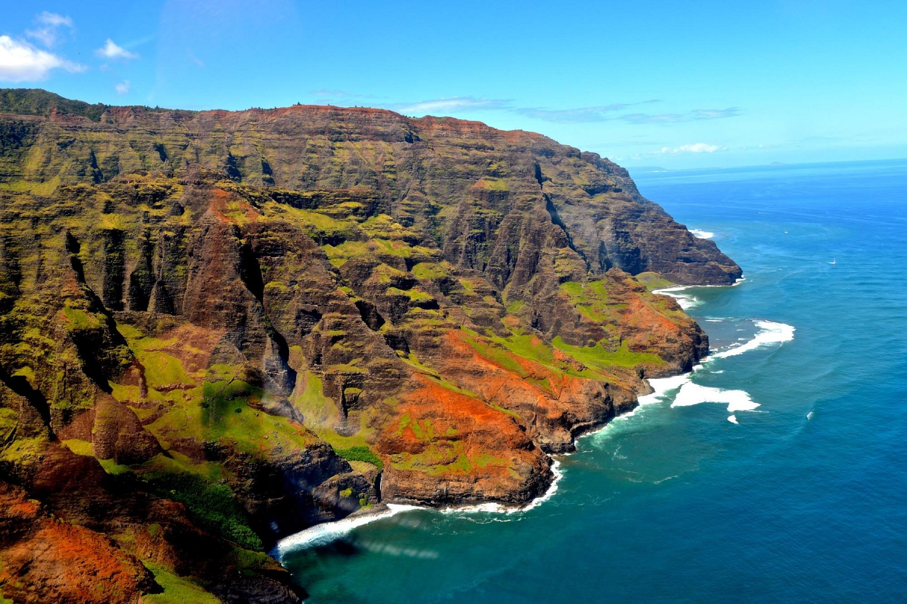

Travel
Hawaii
Hawaii is the most isolated population center on Earth: It’s about 2,400 miles from the Mainland U.S., the closest landmass. Because of that, it has its own time zone, Hawaii Standard Time, and does not observe daylight saving time. Beginning the second Sunday in March, Hawaii is three hours behind the Pacific Time Zone (i.e., West Coast of the U.S.); starting on the first Sunday in November, it is two hours behind.
Hawaii's state flower is the yellow hibiscus (pua mao hau hele); state bird: nene (Branta sandvicensis); state fish: humuhumunukunukuapuaa (Rhinecanthus rectangulus); state mammal: Hawaiian monk seal; state marine mammal: humpback whale; state land mammal: Hawaiian hoary bat; state tree: kukui (Aleurites moluccana); state song: “Hawaii Ponoi” (King Kalakaua wrote the lyrics); state motto: Ua Mau ke Ea o ka Aina i ka Pono (“The life of the land is perpetuated in righteousness”).
Photo Gallery

Italy

Throughout history, Italian art, architecture and culture have had an influence around the world. Famed Italian painters include Leonardo da Vinci and Michelangelo. Italy is also at the heart of the Catholic Church, which is governed from the Vatican City, a city-state surrounded by Rome.
Italian is Italy's official language, which has its roots in the ancient and dead language of Latin. If you listen while people are speaking, the language can sound like a song. Many expressions in Italian are accompanied by hand gestures with very specific meanings.
Photo Gallery